The object of the game is to take care of your Nano Baby just like you would a real baby. If you take good care of your Nano Baby, it will grow up into a happy family. If you neglect your Nano Baby, the game will end prematurely with an unhappy family. The game takes approximately one month to play successfully.
| 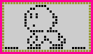 |
= Cancel/Mode (circle button)
= Left Cursor (left arrow button)
= Right Cursor (right arrow button)
= Confirm (square button)
There are two different modes for your Nano Baby : Timer Mode and Game Mode.
Remove the Activation Tab by pulling it straight out. Your Nano Baby should now be activated.
|
 |
After you set the current time on your Nano Baby, sit back and watch the wonders of binary birth, (be patient, this takes a few minutes).
As soon as your baby is born and you know if it's a boy or a girl (the girl has pigtails, the boy doesn't) it's time to give your digital bundle of joy a name.
To enter your new Nano Baby's name, simply:
|
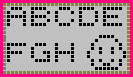 |
The Nano Baby game has begun!
BABY'S HEALTH (Picture of a doctor's chart)
In order to take good care of your Nano Baby, you must know what it needs.
To check the Baby's health:
Your can check the following :
|
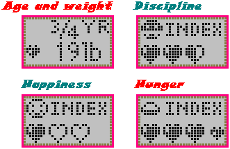 |
Empty hearts indicate a low score and full hearts indicate a high score.
(NOTE: Always check the Health Icon when your Nano Baby cries)
FEEDING TIME (picture of baby eating with spoon)
All babies work up an appetite being born so you'll want to feed your newborn Nano Baby right away.
| To feed your binary bundle of joy: | 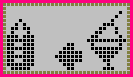 |
|
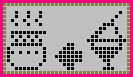 |
(NOTE: too many snacks are not good for your Nano Baby)
CLEANING TIME (picture of bathtub)
When your Nano Baby makes a mess , your have to clean it up - yuka-puk!
If you see some stinky digital droppings on your screen or tiny little foot prints, then it's time to clean your Nano Baby.
|
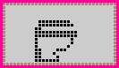 |
Repeat as necessary.
PLAY TIME FOR BABY (picture of baby wearing hat holding bat)
Playing with your Nano Baby is very important. You need to make it happy to grow up healthy. There are two games you can play with your Nano Baby.
Game 1 is the classic Rock, Paper and Scissors.
Game 2 is the exciting Crawling competition.
|
 |
(GAME 1)
Your Nano Baby will select either Rock, Paper or Scissors at the same time you do. You select Rock by pressing , Paper by pressing and Scissors by pressing .
Rock breaks scissors. The player who selected Rock wins,
Scissors cuts Paper. The player who selected Scissors wins.
Paper covers Rock. The player who selected paper wins,.
If you guess right, your Nano Baby wins and it will be very happy!
(GAME 2)
It's a baby crawling competition against the clock! Push or (depending on which direction your baby is facing) repeatedly to help your baby crawl. Hurry! You only have a few seconds before time runs out!
If you make it to the goal before the time runs out, your Nano Baby will be very happy.
SLEEP TIME (picture of sun and moon)
Your Nano Baby must get plenty of rest; so when you see that your Nano baby is snoring, turn out the lights.
To turn out the light:
|
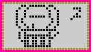 |
When your Baby wakes up, don't forget to turn the lights back on.
DISCIPLINE (picture of a crying baby's face)
If your Nano Baby begins to misbehave then you must discipline it.
(NOTE: Be sure to check the Health Icon first!) To teach your Nano baby to behave, you must:
MEDICINE (picture of nurse)
| If your Nano Baby gets sick, (picture of a skill with fumes) you must give your baby medical attention right away! | 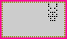 |
(NOTE: If your Nano Baby will not play with you or will not eat even though it is hungry, then your Nano Baby is , indeed, sick)
|
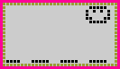 |
Your Nano Baby's health will improve after the first dose of medicine and the icon will change appearance (picture of a clear face with black eyes). You will need to administer a second treatment 2 hours after the first in order to ensure good health. If you attempt to give a second treatment in less that 2 hours from the first, it will take longer to make your Nano Baby healthy again.
If the attention icon appears along with a beep, you need to check on your Nano Baby.
SUCCESS/WHAT HAPPENS WHEN MY BABY TURNS 3?
Be a good parent and take very good care of your Nano Baby. When your first Nano Baby becomes 3 years old, (approximately 12 days) , the parents will appear on the screen.
| Press the and at the same time and a second baby will be born! | 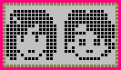 |
If your first Nano Baby is a boy then the second will be a girl - or the other way around. Now it is your job to take care of the second baby while the parents look after the first born. If you take good care of the second Nano baby for 12 more days, you will have a happy ending with a happy family!
If you do not take good care of your first Nano baby, the game will end and a second Nano Baby will not be born. If the second Nano baby is not well cared for the game will end (without a happy family).
TO START A NEW NANO BABY, SIMPLY:
| Press and at the same
time NOTE: Pressing these two buttons will cause the game to reset. |
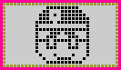 |
Do not mix old and new batteries. Do not mix alkaline, standard (carbon-zinc), or rechargeable (nickel-cadmium) batteries.
page last updated 25 August 1997